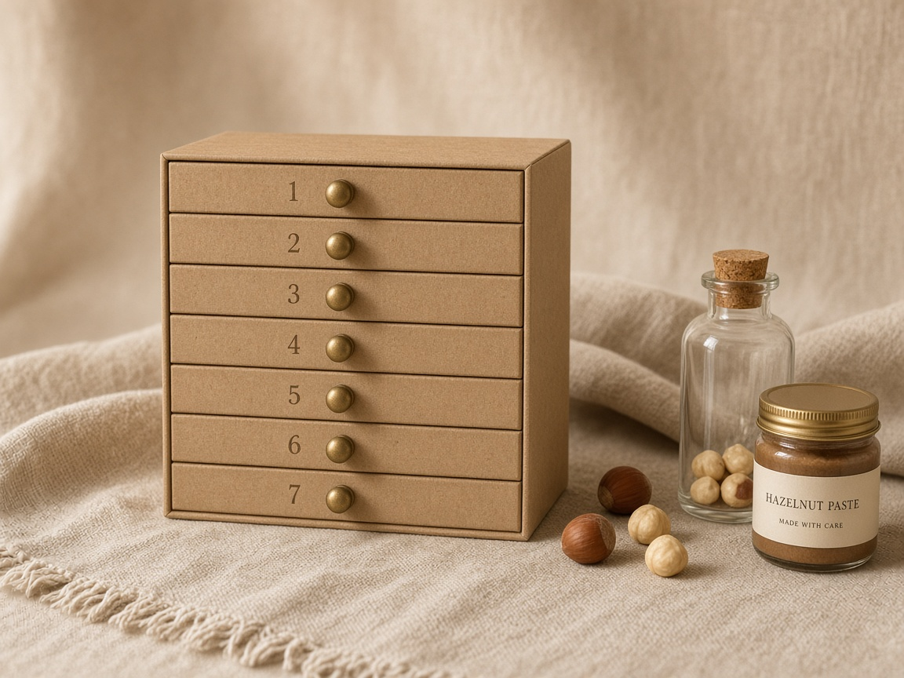

Компактний подарунок
«7 днів фундука»
Один тиждень — сім маленьких відкриттів. Без сертифіката на дерево, можна замовити окремо.
- 1Фундук у шкаралупі, сирий60 г
- 2Смажений фундук30 г
- 3Фундук у темному шоколаді25 г
- 4Фундукова паста30 г
- 5Шоколадна фундукова паста30 г
- 6Карамелізований фундук30 г
- 7Фундукове печиво30 г
1 190 грнЗамовити →
Алкогольна версія можлива лише після окремого підтвердження 18+ та перевірки вимог до продажу й доставки.